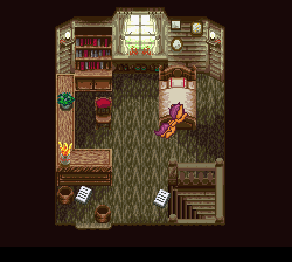

Hi Tumblr. I’m grounded.
I stayed up last night in a kind of daze, laying on Ms. Rarity’s couch and watching infomercials until about 2 AM. Then I started to get the same feeling again—but stronger. It was a ripping, twisting feeling spreading through my body, like someone had reached into me and was trying to shake my heart loose from my chest. I stood up to run to the bathroom like Ms. Rarity had told me to do, but instead I ended up running out the front door. Just running and running and running, back to miss Pinkamina’s house. I had completely forgotten I owned a scooter. I think I almost flew (I wasn’t paying much attention to how I got there; my wings are just sore and stiff again this morning.)
I slammed on the door five or six times. I didn’t care how loud I was being. I was panting, holding my arms tightly across my chest, doubled-over, about to kneel down and just curl up in a foetal ball on the stoop, when miss Pinkamina answered.
She looked horrible. I mean, not really that bad compared to any of our victims… but I had never seen miss Pinkamina herself like that. Her cheek and lip were torn and wet with blood; her forehead was bruised and had little bits of dirt embedded in it… she had a little piece of her left ear missing. She says that all the damage was from when Fluttershy first escaped, and I guess I just hadn’t noticed it in the commotion. Anyway, she stepped outside with me and closed the door, and gave me a really tight glare, but also a shaky hug. Her eyes were unfocused and her pupils had that weird constricted washed-out strain to them. She stood quietly on the stoop with me for about five minutes, maybe to calm down or to make sure nopony was chasing after me or something, then cracked open the door, whispering for me to stay directly behind her.
I asked in a similar whisper how she had been planning to catch Fluttershy. She unballed her left fist and fanned out a plastic bag. “I’m not planning on killing her. This will work sort of like a garrotte—I just need to get behind her and get it down around her head—then she’ll run out of air and we can take her back upstairs.”
“Won’t she struggle, though? I mean, she was able to get out of the ropes and out of the room and–”
“She surprised me. That’s all. …and you tied those ropes, Scootaloo. It doesn’t matter now, though; whatever burst of energy she worked up is obviously burnt out now. She’ll be back to quivering and crying in a corner somewhere.”
We walked together through the darkened entryway, and into a sort of parlour that miss Pinkamina hadn’t bothered to furnish yet; right now it just has a few long, bare-wood tables, pulled over from the dining room, where we dump out the contents of whatever bags or clothes our victims happened to have on them at the time we found them. I was silently grateful that miss Pinkamina hadn’t decided to dress them with pony-obscuring tablecloths.
Miss Pinkamina raised her hoof in a signal to wait, then went into the other room and came back holding her computer. She pushed the junk off the middle of one of the tables and put it down in the space, then turned the brightness on the screen all the way up. She whispered, “I have a theory about what Fluttershy is trying to do right now; why she hasn’t given herself up yet. Let’s go into the kitchen—and make sure she’s not hiding in there now—then turn this game around on her.”
Miss Pinkamina fiddled for a few more minutes with her hooftop—opening and closing different websites, adjusting the screen so it was tilted to various angles, picking it up and then putting it down again in what looked to me to be the exact same position—then hurriedly snuck out through the arch and disappeared into the darkness. I followed. She was leaning, just out of sight, in the slight alcove the pantry cupboards left beside the entry. She waved me to move into the kitchen itself, and then pointed to the other hall entrance—the one leading into the dining room—then to me, and to her eyes. Then she stopped looking at me, focusing only on the table and the glowing rectangle fifteen feet away. I leaned over to the kitchen counter, and quietly slid a knife out of it. Then I stood in the other corner.
We both waited, statues in a night garden, for what seemed much more than 23 minutes.
Miss Pinkamina’s head shot up and she crept out past her corner, into the faint fuchsia glow of the parlour. I heard Fluttershy’s voice. I padded silently out after her. Ms. Rarity’s sock things had a useful purpose after all.
Miss Pinkamina was standing ready with the mouth of her bag outstretched between her hooves, her arms raised above Fluttershy’s head. She pulled it down; Fluttershy’s legs went out from under her, and her face landed on the wooden floorboards with a limp thump.
I made a noise. I think it might have been a squeak. Miss Pinkamina jumped a few inches in the air and snapped her head around to look at me. She was sitting on Fluttershy now, her hands still pulling the plastic bag taut. She saw the knife in my hand.
“Why do you have that!?” she said. She looked genuinely scared. “Put it away! We’re not going to… kill… h-“
Miss Pinkamina let go of the bag, and got up off the Pegasus.
“Put that back, and help me carry her upstairs.”
((OOC: Props to rainbowdashreplies for the pixelling.))
{kind=link}
{kind=link}